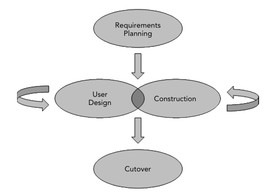

| Article Year -- 2017
| Article Year -- 2017
 | Tags --
software |
architecture |
rad |
rapid |
agile |
development |
| Tags --
software |
architecture |
rad |
rapid |
agile |
development |
RAD models are agile models that focus on getting software done as quickly as possible. Examples of these models include Scrum and XP (Extreme Programming), which are the most well known. The end goal for these models is to have the project done in a fast manner and be delivered to the customer early. RAD is originally a model in and of itself, but new models have started incorporating features from this model into their own, so we will call these features the 'RAD principles'. You can learn more about the agile principles by reading the Agile Manifesto, which are generally regarded as the core principles used in any agile development model.
The original RAD model by James Martin can be seen below:  The requirements phase is done once and then the developers iterate over construction and user design until all requirements are met and the product can be delivered to the customer. The customers can then give feedback and provide adjustments to the project in the user design phase if the projects seems to be going off track. Cutover describes the point when the project is delivered to the user.
Agile models are generally preferred over the traditional models, such as the Waterfall model, since they have been proved to minimize bugs and meet more requirements. Projects following these models are able to adapt to change, whether it be internal or external and thereby change how the project is laid out during development. With these kinds of models you should minimize the amount of documentation, since whatever you wrote in week 1 might not by applicable in week 20. You should avoid too much planning early on, since projects are split into short time-boxed iterations, that can last for as little as 1 week. You can’t plan several months ahead, since your might will most certainly change.
Meetings should be kept as short and efficient as possible and the developers and anyone else on the team should be trusted with what they are doing and allowed to work for themselves without too many disturbances. Self-organizing teams is an important aspect in many agile models, whereby the developers work without being micro managed by a manager all the time. They are trusted to deliver a working product, which gives them a sense of responsibility and ownership of their code. Likewise the customer should be ‘kept on a leash’ as their input is highly needed to steer the project in the right direction. One representative is chosen to communicate with the customer to then communicate information to the developers, so as to not waste the developer’s time with daily customer meetings.
Each iteration, however short it might be, is a small project in and of itself. All the phases in a standard software project should be present, which also means that the developers should be knowledgeable about requirements gathering, high level design and so on and not just their own area of expertise. This means that the developers need to be higher skilled, but will be able to give more input to the overall project. A clear deadline for each iteration is important, so that developers can work towards reaching a goal. In this way you can also measure how well a project is performing along the way, by using things like a Burndown Chart to see how well the project is on track.
Delivering value to the customer early is important, but you should refrain from delivering every small release, if only 1 or 2 features were added. This will only bog down and perhaps confuse the customer, so keep your customer releases separated by a few test releases. Companies often use numbering schemes to show how far a project has come since last time.
Version 1.2.3.4 means major version 1, minor version 2, build 3, and revision 4.
With every major release you update the first number. After an iteration you could update the minor release number and you could update the build number after maybe every week, while test builds update the revision number. This gives a clear indication to the customer how far the project has went.
Having quality and tested code throughout the project is equally as important, since you should be able to deliver a working piece of the product to the customer after each iteration. Having buggy code in these releases sends a bad signal to the customer. To achieve better quality code you should constantly perform tests, even very early in the project. While it is important to finish the product as fast as possible, you should not go faster than what your developers are capable of. This also means that you reduce the time spent fixing bugs later in the project.
Good communication between team members is essential for agile projects to work efficiently. Developers should not be afraid to ask for help if they get stuck and any major problems should be discussed in the meetings by all team members. Give everyone a voice and trust each other with what they do. People in teams are generally good at dividing the work between themselves, so you should trust them to do so. Let the developers do what they do best, so you minimize the time needed for training. Good communication between the business people and the developers is also important, as they are both equally depending on one another.
There are many more concept and principles present in the RAD models and they each use the agile principles to different degrees, sometimes to the extreme. You can read more about them on the Agile Manifesto site.


{kind=link}